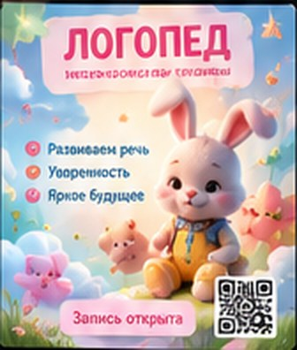
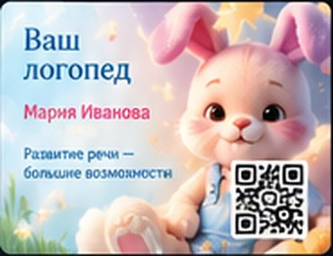
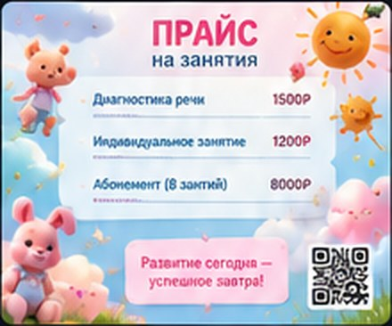
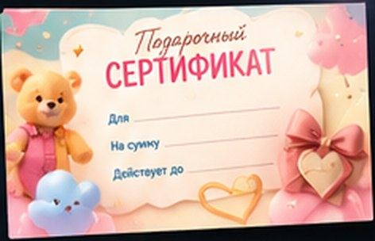

Постер
Когда нужна одна яркая реклама
990 ₽
- 1 постер в выбранном стиле
- Ваш текст, цены и контакты
- Для соцсетей и печати
Готовые визуальные решения для бизнеса, которые привлекают клиентов и вдохновляют
Готовые шаблоны для вашего бизнеса. 9 сфер — десятки возможностей.
Один стиль — вся реклама вашего бизнеса
Обычное фото превращается в рекламу, которая продаёт. Разрешите показать ваш пример здесь — и получите скидку 20%
Впишите название и телефон — они сразу появятся на постере и визитке.
Выберите стиль в каталоге — я сделаю такую же рекламу для вашего бизнеса: с вашим текстом, ценами и контактами.




Помогите мне рассказать о своей работе — и получите скидку на следующий заказ.
Назовите VISUALL10 при заказе. Действует до воскресенья.
Поставьте оценку и напишите пару слов о работе — получите скидку на следующий заказ.
Разрешите показать ваше фото «до» и готовую рекламу «после» на сайте — скидка на этот же заказ.
Хочу скидку 20%Друг называет ваше имя при заказе — скидка 15% и ему, и вам на следующий заказ.
Пригласить другаОтметьте, что нужно, — сразу увидите цену со скидкой и срок.
Всё прозрачно: вы заранее знаете, что получите, когда и сколько это стоит.
Оценки и отзывы тех, кто уже заказал рекламу
Клиенты листают ленту быстрее, чем вы успеваете сказать «скидка». Моя работа — чтобы на вашем посте палец остановился, а рука сама потянулась написать «хочу» 😉
Я превращаю маленький бизнес в бренд, который узнают с первого взгляда.
Что умею, кроме красивых постеров:
Можно заказать что-то одно, а можно всё сразу — и тогда от визитки до сайта ваш бизнес будет говорить одним голосом. Пишите, разберёмся вместе и без занудства 🤍
Можно взять что-то одно. А можно всё — и ваш бизнес наконец заговорит одним голосом.
Постер, визитка, сертификат и прайс — как из одного дорогого журнала.
Картинка останавливает взгляд. Видео заставляет досмотреть до конца — и написать.
Лента, на которую подписываются, а не пролистывают. Единый стиль, тексты, сторис.
Принимает заявки в три часа ночи, не уходит в отпуск и не просит повышения.
Вы сейчас на нём. Нравится? Сделаю такой же — только про ваш бизнес.
От визитки до сайта — один стиль, один голос, один человек, который за всё отвечает.
Да. Промокод VISUALL10 — −10% на первый заказ (действует до конца недели). За отзыв — −15% на следующий заказ, за разрешение показать «было — стало» — −20%, за приглашённого друга — −15% вам обоим. Скидки не суммируются — действует самая большая.
Выберите сферу и понравившийся стиль в каталоге, напишите мне в Telegram @sveta_muzyka и пришлите текст, цены и контакты. Дальше я всё сделаю сама.
Название бизнеса или имя мастера, список услуг с ценами, телефон и соцсети. Если есть логотип или свои фото — тоже присылайте, я использую их в дизайне.
Постер — 990 ₽, комбо (постер + визитка, сертификат или прайс) — 1 490 ₽, пакет из 4 форматов — 2 590 ₽. Отдельно: визитка — 590 ₽, сертификат — 690 ₽, прайс на 3 страницы — 1 290 ₽, видео — от 1 990 ₽, Telegram-бот — от 9 900 ₽, сайт — от 24 900 ₽, ведение Instagram — от 15 000 ₽ в месяц.
Предоплата 50% по СБП или на карту, остаток — после того как вы согласовали результат. Готовые файлы отправляю сразу после полной оплаты. Если я ещё не начала работу — верну предоплату полностью.
Да. Да. В постер, комбо и пакет входят 2 круга правок бесплатно, в видео — 1, в сайт — 3. Правки — это текст, цены, контакты, цвета и мелкие детали. Дополнительный круг — 300 ₽, смена стиля после согласования — как новый заказ со скидкой 50%.
Картинки для соцсетей и мессенджеров (1080×1350) и PDF для типографии: визитка 90×50 мм с двух сторон, сертификат 210×99 мм, прайс на 3 страницы. Файлы отправляю в Telegram сразу после полной оплаты.
Нет. Ещё делаю рекламные видеоролики и Reels, веду Instagram в едином стиле, настраиваю Telegram-ботов для заявок и делаю сайты — такие же, как этот. Видео — от 1 990 ₽, Instagram — от 15 000 ₽ в месяц, бот — от 9 900 ₽, сайт — от 24 900 ₽. Точную цену назову под вашу задачу.
Да, напишите мне в Telegram и расскажите идею — обсудим, что можно сделать.
Постер — 1 рабочий день, комбо — 1–2 дня, пакет из 4 форматов — 2–3 дня, видео — 2–3 дня, бот — 5–7 дней, сайт — 7–14 дней. Срочно за 24 часа — +50% к цене. Срок считается с момента, когда вы прислали все материалы и предоплату.
Конечно. Пришлите фото вашего торта, маникюра или интерьера — я превращу его в рекламный постер, как в блоке «Было — стало».
По одному примеру для каждой услуги. Нажмите на постер, чтобы открыть всю коллекцию.
Коллекция рекламы
Уже сейчас здесь есть готовые промпты и рекламные тексты. А рекламу в любом стиле из каталога я сделаю для вас под заказ.
Одна услуга — разные стили
Каждый стиль — коллекция из шести макетов: постер, визитка, сертификат и прайс на три страницы. Скопируйте промпт, вставьте в нейросеть для картинок и сделайте все шесть макетов одного стиля подряд, в одном чате. Цены — примеры, меняйте на свои.
По 10 вариантов на каждую услугу: смысл один, а стиль разный — с юмором, по-дружески, тепло и профессионально. В каждом варианте сначала боль клиента, потом решение, слоган и призыв к действию.
Отмечайте понравившиеся постеры сердечком ♡ и отправьте подборку Светлане — она сделает такие же для вас.
Спасибо, что выбрали меня! За отзыв — скидка 15% на следующий заказ.
Выберите, что вам нужно — сообщение уже готово. Можно поправить его под себя.
Промокод действует до воскресенья. Успейте!
Комплект в одном стиле: цвета и шрифт взяты из постера, цены в прайсе — примеры для этой услуги.